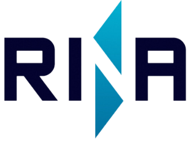
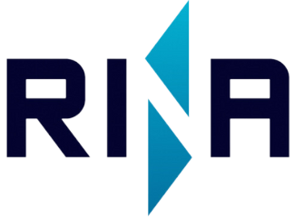

a leading technology consulting firm in Technica Consultant, Marine Inspection, and Non – Desructive Testing. PT. KJM was established since 2011 with qualified management’s team, technicians or engineer, and focuses on creating benefits for clients with commitment in delivering Value, Quality Integrity, and efficiency. Our Head Office is in Surabaya and have many stations in other city such as Samarinda, Banjarmasin, Batam, and Medan .
Non-destructive testing (NDT) is used by industry to evaluate materials, components, structures, or systems for differences or defects without causing damage, ensuring integrity and safety.
Inspections encompass load, crane, bollard pull, vacuum, crankshaft deflection, Megger, hardness, and hydrostatic tests, ensuring material and equipment integrity, durability, and safety.
• Underwater Survey
• Drone Virtual Inspection
 



 About
About